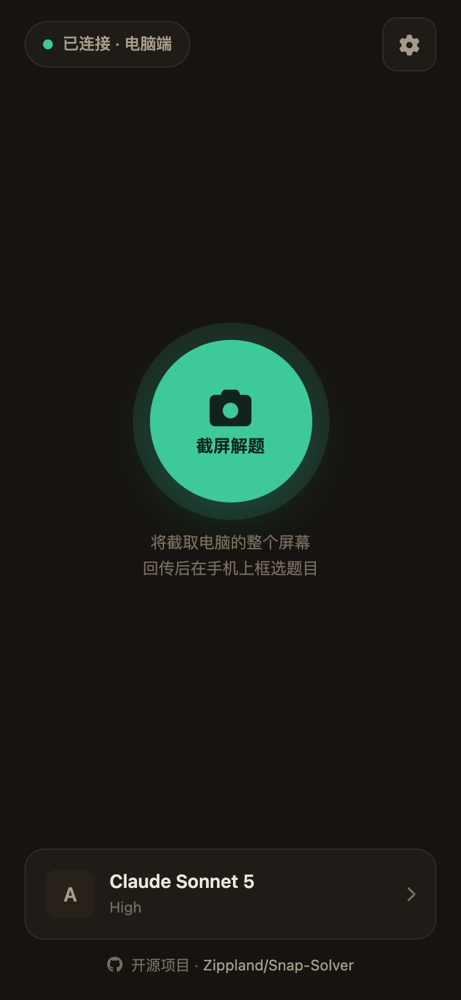
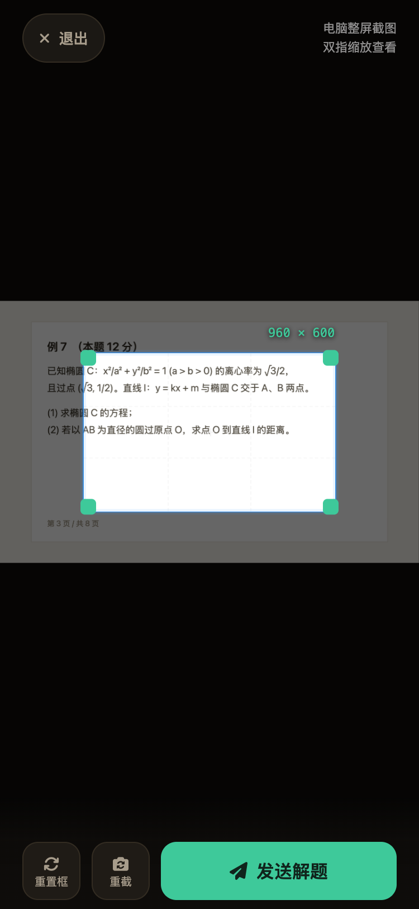
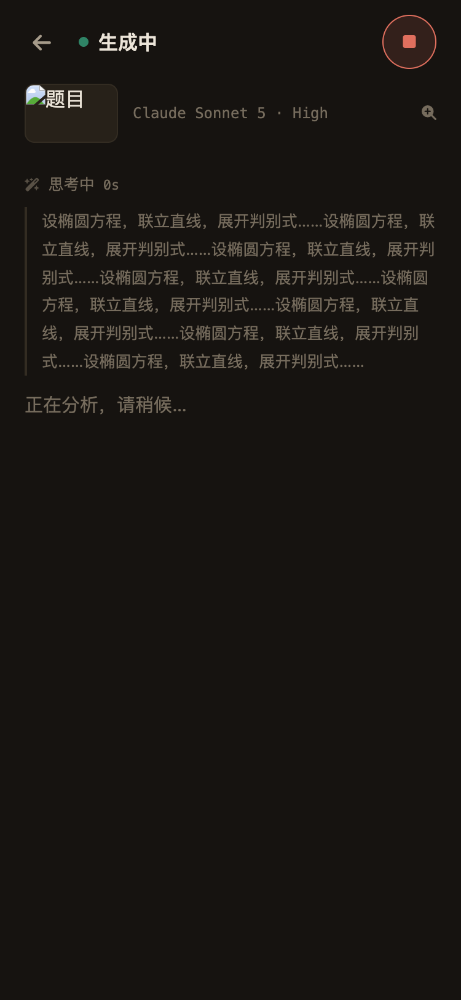
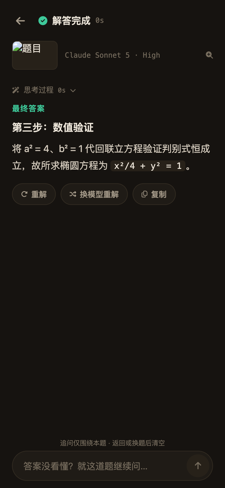
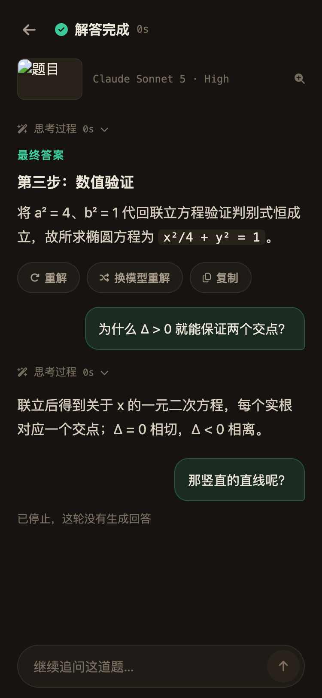

屏幕上卡住的那道题——数学、物理、代码报错——框一下发过去，几十秒后完整解题步骤就在手机上。看不懂？追着问，问到懂。
自带密钥（BYO-Key）· 支持 Claude GPT Gemini 通义 豆包 Kimi

左右滑动 · 完整流程 01 – 04




题在电脑上、你在沙发上：手机点一下，电脑自动截屏回传，框住题干就发——不用拍照、不用打字、不用来回切窗口。
思考过程全程可见，答案分步骤展开；哪一步没跟上，就在答案底下继续追问，AI 带着原题和上下文接着讲。
Claude、GPT、Gemini、通义、豆包、Kimi 随手切换；一道题换个模型重解，对比着看谁讲得清楚。
开源免费，Apache 2.0|自带密钥，用量自己掌控|跑在你自己的电脑上，截图只走局域网